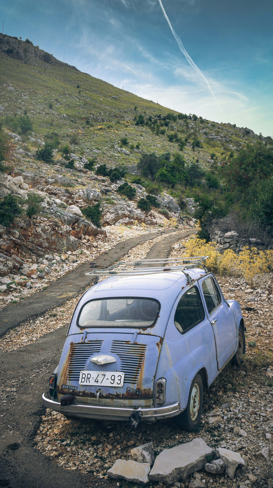

WebP Image File
This picture depicts an old, rusted automobile sitting on a small, bumpy road that passes through a region of steep mountains. Tiny shrubs and plants border the road, which rises to a clear blue sky marked by a slender white aircraft line. Although it seems dilapidated, the automobile gives the serene, natural scene personality. The automobile and the lonely, silent road evoke memories of bygone travels and adventures. The reason I chose this picture is because it represents a journey through life. The old automobile indicates perseverance despite deterioration over time, and the rocky and twisting route symbolizes the difficulties we encounter. The landscape is a perfect illustration of how pictures can express deeper ideas under the surface because it inspires feelings of seclusion and meditation.
Source: Image Source